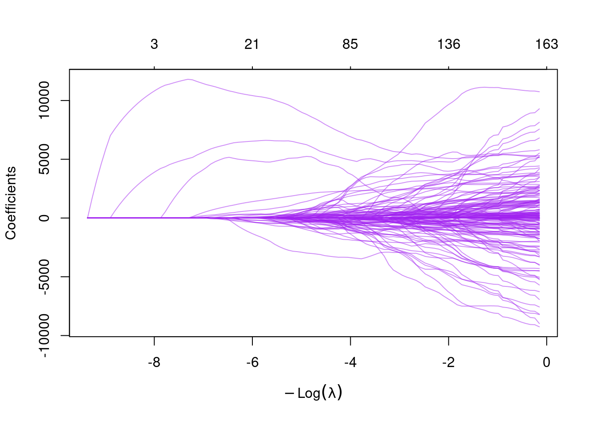
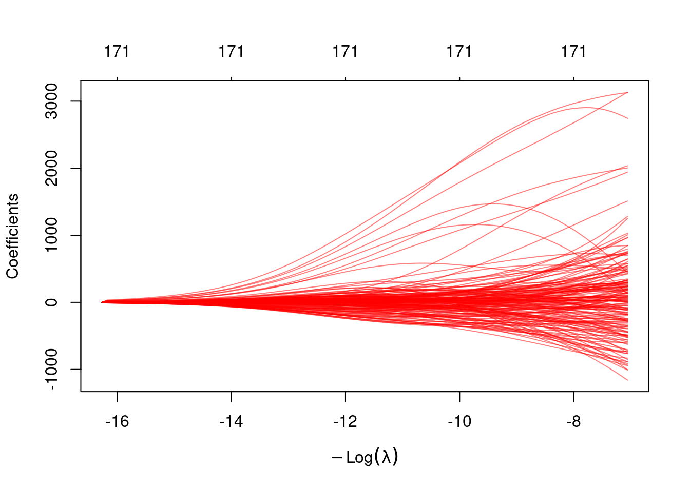
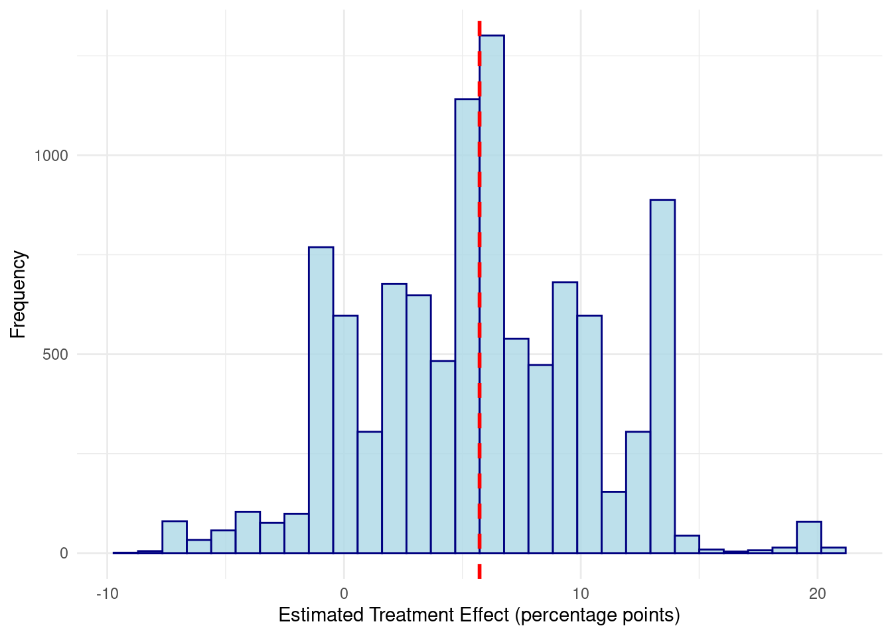
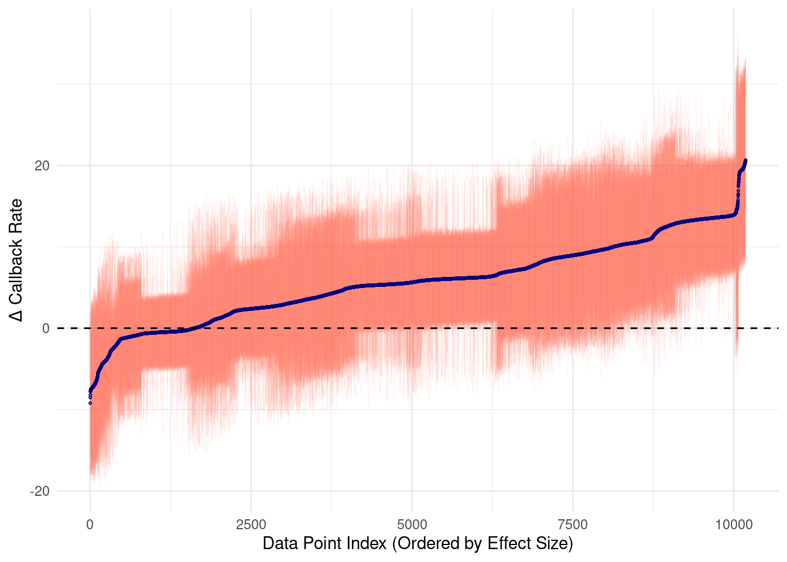
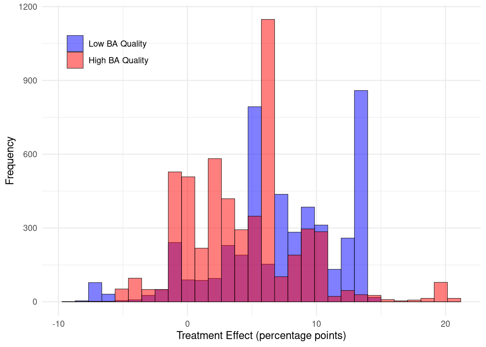
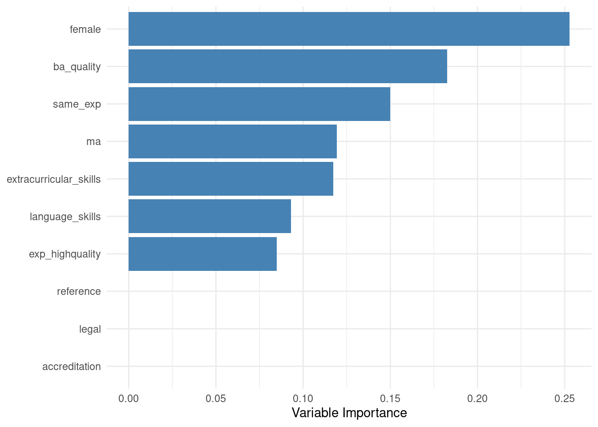
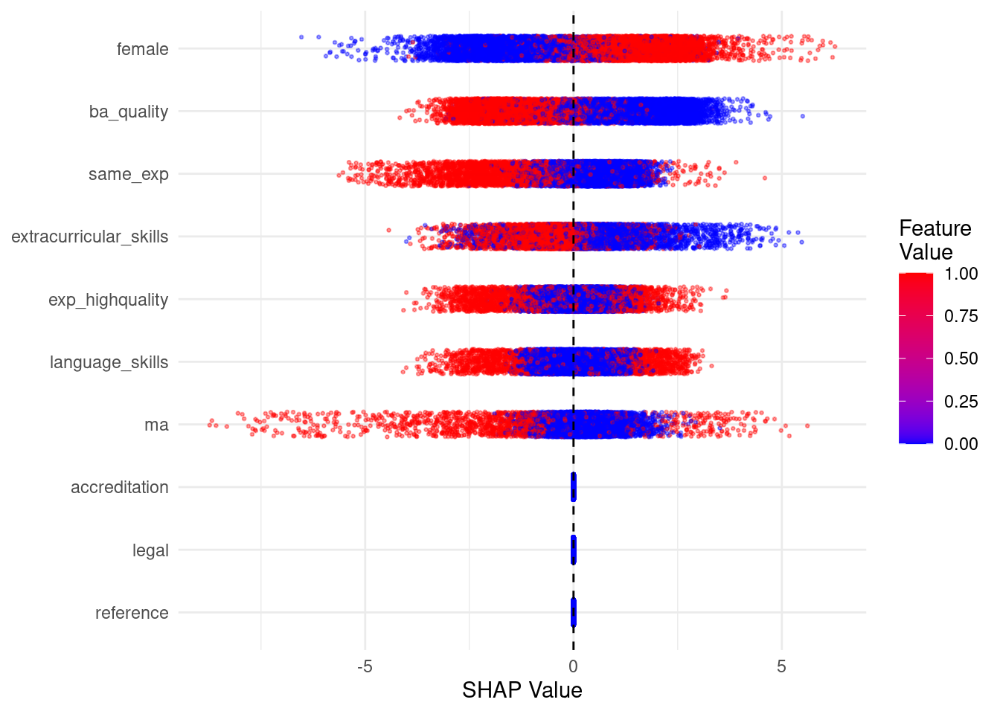

library(readr)
library(dplyr)
library(glmnet)
library(sandwich)
library(lmtest)
library(ggplot2)
data <- read_csv("data/Farrell_2015.csv")Chapter 9
Code Call-out 9.1: Exploring Penalised Regression Models
In this code call-out we explore regularized regression models using data from Farrell (2015), who revisits the NSW job training setting we encountered in Chapter 3 (see code call-out 3.1). While Farrell (2015)’s primary interest is in inference following model selection, here we focus on the basic workings of model selection and penalised regression models, given their importance for call-outs later in this chapter. The data, originally from LaLonde (1986) and Dehejia and Wahba (1999), consist of the NSW experimental sample (nsw == 1) alongside a non-experimental control group drawn from the PSID (nsw == 0). The outcome of interest is earnings in 1978 (y), the treatment indicator is treat, and the dataset contains 10 baseline demographic covariates (v3-v12), together with interactions of continuous variables (v13-v34), interactions of dummy variables (v35-v48), and polynomials up to order five of the continuous covariates (v49-v173). This rich covariate structure, with 173 potential predictors in total, is designed to allow for very flexible functional forms, which is precisely the setting where regularization is most valuable. We focus here entirely on prediction and model selection; Code Call-out 9.2 turns to the causal estimation problem directly.
Baselines estimates without regularization
Let’s get started by opening these data, loading packages we will require below, and doing some initial inspection, as well as estimating some baseline (regression) models without regularization.
With the data in memory we can confirm that it looks how we think it should. We can start by confirming that the experimental sub-sample is identical to that in Dehejia and Wahba (1999), Dehejia and Wahba (2002), which we discussed in code call-out 3.1:
# Experimental sample (NSW)
data %>% filter(nsw == 1) %>% count(treat)# A tibble: 2 × 2
treat n
<dbl> <int>
1 0 260
2 1 185We can see here that, similarly to when we inspected the NSW analysis in Chapter 3, the experimental sample consists of 185 treated units and 260 controls. We can also inspect the layout of the non-experimental sample:
# Observational sample (PSID)
data %>% filter(nsw == 0) %>% count(treat)# A tibble: 2 × 2
treat n
<dbl> <int>
1 0 2490
2 1 185In this case, there are 2,675 observations, with the treated group simply being replicated from NSW data, and the remaining 2,490 drawn from the PSID. We can also confirm that we re-create experimental estimates from the NSW training program:
model_exp <- lm(y ~ treat, data = data %>% filter(nsw == 1))
coeftest(model_exp, vcov = vcovHC(model_exp, type = "HC1"))
t test of coefficients:
Estimate Std. Error t value Pr(>|t|)
(Intercept) 4554.80 340.20 13.3884 < 2.2e-16 ***
treat 1794.34 670.82 2.6748 0.007753 **
---
Signif. codes: 0 '***' 0.001 '**' 0.01 '*' 0.05 '.' 0.1 ' ' 1This is our experimental benchmark, and as we have seen previously suggests that the job training program increases earnings by an average of $1,794 per year.
From now on, however, we will focus on the non-experimental subsample (i.e., individuals with nsw == 0). In this case, we will seek to determine which covariates are relevant predictors of wages in the post-treatment period from our large set of potential covariates using regularized regression. Before implementing these models, let’s define the variables we will use. Below we store vectors of baseline covariates, interaction terms (between continuous and dummy variables respectively), and polynomials of continuous variables.
psid <- data %>% filter(nsw == 0)
covariates <- paste0("v", 3:12)
continuous_interactions <- paste0("v", 13:34)
dummy_interactions <- paste0("v", 35:48)
polynomials <- paste0("v", 49:173)
all_vars <- c(covariates, continuous_interactions, dummy_interactions, polynomials)We can confirm that the choice of covariates to include is certainly of consequence. If we simply regress the outcome on treatment, we see that the observational sample clearly does not form a good counterfactual. Rather than approximating the experimental effect, we find effects which are both mis-signed and an order of magnitude larger (i.e., an average decrease of $15,205 in annual earnings for treated individuals).
model_naive <- lm(y ~ treat, data = psid)
coeftest(model_naive, vcov = vcovHC(model_naive, type = "HC1"))
t test of coefficients:
Estimate Std. Error t value Pr(>|t|)
(Intercept) 21553.92 311.78 69.131 < 2.2e-16 ***
treat -15204.78 655.91 -23.181 < 2.2e-16 ***
---
Signif. codes: 0 '***' 0.001 '**' 0.01 '*' 0.05 '.' 0.1 ' ' 1We can, however, see that simply including all possible covariates in this model also appears to not be an ideal solution. When we do this, as we may expect given that we are in essence likely over-fitting our model, the variance of our estimated treatment effect becomes quite large, not letting us rule out the actual experimental treatment effect we estimated earlier, but also quite a large range of other effects. We do this below (omitting v3, v4, v8 and v9 given perfect colinearity):
Observational_All_Covariates <- lm(y ~ treat + . - nsw - v3 - v4 - v8 - v9, data = psid)
coeftest(Observational_All_Covariates, vcov = vcovHC(Observational_All_Covariates, type="HC1"))t test of coefficients:
Estimate Std. Error t value Pr(>|t|)
(Intercept) 48100.99822 8368.77619 5.7477 0.00000001014 ***
treat 83.16333 933.45152 0.0891 0.9290157
v5 151.66099 3915.34278 0.0387 0.9691047
v6 -1788.13164 2775.18976 -0.6443 0.5194219
v7 358.01233 1301.30547 0.2751 0.7832484
v10 16610.46638 11950.49157 1.3899 0.1646705
v11 681.62235 3843.22409 0.1774 0.8592424
v12 -8767.04494 4619.22672 -1.8979 0.0578179 .
v13 1826.11597 1968.66259 0.9276 0.3537085
v14 305.08900 1845.29251 0.1653 0.8686947
v15 1230.57773 1004.91313 1.2246 0.2208557
v16 -874.12488 455.54934 -1.9188 0.0551185 .
(output omitted)
v169 224836.43268 53495.95388 4.2029 0.00002727853 ***
v170 -29179.84736 9788.16263 -2.9811 0.0028995 **
v171 -40788.64696 13025.42051 -3.1315 0.0017594 **
v172 -124323.51469 46024.14532 -2.7013 0.0069541 **
v173 37485.17537 9322.13595 4.0211 0.00005964041 ***
---
Signif. codes: 0 '***' 0.001 '**' 0.01 '*' 0.05 '.' 0.1 ' ' 1Turning to Penalized Regression Models
Let’s begin exploring regularised regression models which should guard against over-fitting, while at the same time including relevant covariates. We will begin by working with the Lasso here (the ‘Least Absolute Shrinkage and Selection Operator’), and below consider some alternative forms of regularized regression models. As we lay out in Chapter 9, this consists of estimating the following:
\[ \underset{\beta}{\text{argmin}}\left\{\sum_{i=1}^N(Y_i-X^\prime\beta)^2+\lambda(||\beta||_1)\right\} \tag{1}\]
The \(\ell_1\) penalty drives some coefficients to exactly zero, making Lasso a tool for both estimation and variable selection. The strength of regularization is controlled by \(\lambda\): larger values shrink more coefficients to zero, yielding a sparser model.
In general, it is very important to note that the precise implementation of Lasso algorithms differs between languages, with slight differences in the way colinearity is handled, standardisation of variables, convergence tolerance of algorithms, and how intercepts are incorporated. Thus, unless very explicit defaults are set, we will not necessarily observe precise reproducibility across languages. Nevertheless, we should expect broad patterns to be very similar.
Lasso Selection (with an arbitrary penalty)
We can see the way that penalisation in Equation 1 works by incorporating an arbitrary penalisation value for lambda. To run the Lasso in R with our data we can use the glmnet function from the glmnet package, including the dependent variable and all the covariates in our model. Selecting an arbitrary lambda can be done by passing the value directly to the lambda argument. We arbitrarily set it to 10 below:
# Prepare matrices (glmnet requires matrix input)
X <- as.matrix(psid[, all_vars])
y <- psid$y
# Lasso selection with lambda value of 10
lasso_lambda10 <- glmnet(X, y, alpha = 1, lambda = 10)
print(lasso_lambda10)
Call: glmnet(x = X, y = y, alpha = 1, lambda = 10)
Df %Dev Lambda
1 132 66.92 10In this case we can see which covariates are retained after the selection process using the coef function.
# Lasso selected variables (with an arbitrary penalty of 10)
coef_10 <- coef(lasso_lambda10)
selected_10 <- rownames(coef_10)[which(coef_10 != 0)]
cat("Number of selected covariates:", length(selected_10) - 1, "\n") # subtract interceptNumber of selected covariates: 132 coef_10[selected_10, ] (Intercept) v3 v4 v6 v8 v9
10724.805476 -1704.042070 812.159096 -859.032257 9926.944997 1515.252745
v11 v12 v15 v16 v17 v19
-171.916291 -2116.359757 843.259754 -584.966821 298.821038 2829.544859
v20 v22 v24 v25 v26 v27
-1697.314697 474.999840 1843.134474 -2347.683422 75.565778 846.263543
v28 v29 v30 v31 v32 v33
37.897580 48.431646 -420.927634 2554.197033 -934.454968 285.599421
v34 v35 v36 v37 v38 v40
2304.663508 -114.861491 328.346739 75.592469 -961.754618 -826.287417
v42 v43 v44 v45 v46 v47
304.550135 686.472474 164.850072 408.953250 -318.046312 511.157110
v48 v49 v51 v52 v53 v54
-298.928009 -691.121396 392.013166 132.955493 38.631229 30.827936
v55 v56 v57 v58 v59 v60
51.245587 1453.248583 -217.926674 -19.279711 181.949752 -502.019409
v61 v62 v63 v65 v66 v67
737.191761 -597.928566 1423.320779 -251.063826 29.152476 -408.066747
v68 v69 v70 v71 v72 v73
293.722398 221.228521 236.406838 3294.419972 1083.877524 1201.213469
v75 v76 v77 v78 v79 v80
166.655555 1908.212987 -282.232561 -45.612146 -801.976376 778.626688
v81 v82 v83 v86 v87 v89
1287.426512 -1255.928029 -369.539286 3134.303614 2.677498 -4466.423316
v90 v91 v92 v94 v95 v96
54.291065 530.679981 -3187.256352 1.802790 584.149636 58.253276
v97 v98 v100 v101 v102 v103
2677.655726 -2854.091569 -427.887626 872.289697 903.623667 -2033.647124
v104 v105 v106 v107 v108 v109
2275.229731 -733.371095 -4633.099117 703.345427 -1355.753656 365.914774
v110 v111 v112 v113 v116 v117
-1765.971786 -62.187425 684.441970 -65.254428 331.193074 1079.221637
v118 v120 v121 v122 v123 v124
-312.569849 -284.669429 -1951.827963 -1169.992758 3980.123806 919.438218
v125 v126 v128 v129 v130 v133
-4996.704167 912.639442 -3458.957919 1934.890655 2106.720025 3742.020743
v134 v135 v136 v137 v138 v141
407.405337 -6675.818522 -6464.217349 -314.324914 -3214.823055 -6277.520056
v142 v144 v145 v147 v148 v151
2659.301768 906.191901 3508.984991 3029.601641 2517.232598 -680.075197
v153 v155 v157 v159 v160 v161
3141.616574 4404.247990 -852.232155 540.310333 -55.529834 -1753.924204
v163 v164 v165 v170 v171 v172
-504.639528 861.681369 1706.495940 829.274884 -632.670769 10390.396621
v173
-1237.961232 Above we see that when we have imposed a lambda of 10, 132 out of 172 available covariates are retained in the model. We can also display the coefficients on these covariates, though of course, given the nature of the Lasso, they will be shrunk towards zero. Clearly, this value of 10 does not penalize much, as the majority of considered variables remain in the model. However, if we choose a larger penalty, such as a lambda of 1000 below, we should expect fewer covariates to be selected.
# Selecting an arbitrary penalty of 1000
lasso_lambda1000 <- glmnet(X, y, alpha = 1, lambda = 1000)
coef_1000 <- coef(lasso_lambda1000)
selected_1000 <- rownames(coef_1000)[which(coef_1000 != 0)]
cat("Number of selected covariates:", length(selected_1000) - 1, "\n")Number of selected covariates: 9 coef_1000[selected_1000, ](Intercept) v4 v8 v9 v34 v54
2902.53341 3777.06930 6174.27046 11300.16442 589.92163 173.54367
v104 v123 v126 v167
13.78045 54.38547 96.23259 -29.63986 As we can see, in this case only 9 covariates remain in the model. In general (though not necessarily given distinct variable selection), we will also see that the coefficients on selected variables will be closer to zero than in cases with a smaller shrinkage term.
We can view the entire path of coefficients across distinct values of lambda using plot. Below we plot these values (with coefficients plotted against the \(\ell_1\) norm). We can see the nature of shrinkage with coefficients both moving towards zero, and exiting the model as lambda rises.
# Coefficient paths for each L1 norm
lasso_path <- glmnet(X, y, alpha = 1)
plot(lasso_path, xvar = "lambda", label = FALSE, col = adjustcolor("purple", alpha = 0.5))
Choosing \(\lambda\) by Cross-Validation
Rather than selecting \(\lambda\) arbitrarily, typically it will be selected using cross-validation, or some other optimal selection method. By default, 10-fold cross-validation is used, where lambda is selected to minimise out-of-sample prediction error across 10 sub-samples of data (in code call-out 9.2 below we see such cross-validation implemented “by hand”). Below we do this, again visualising coefficients. In this case, given that folds of data are randomly selected, we set a seed for replicability across runs.
set.seed(12131627)
cv_lasso <- cv.glmnet(X, y, alpha = 1, nfolds = 10)
# Display selected covariates at lambda.min
coef_cv <- coef(cv_lasso, s = "lambda.min")
selected_cv <- rownames(coef_cv)[which(coef_cv != 0)]
cat("Selected lambda:", cv_lasso$lambda.min, "\n")Selected lambda: 371.7771 cat("Number of selected covariates:", length(selected_cv) - 1, "\n")Number of selected covariates: 21 print(coef_cv[selected_cv, ]) (Intercept) v3 v4 v8 v9
3269.4683950 -1473.1591917 4851.8818183 6561.6320219 10362.9854504
v19 v22 v28 v34 v40
274.3029606 125.4991903 61.4291232 1447.3796322 -184.7243612
v49 v54 v69 v73 v84
-0.3139632 0.5470032 675.2695775 20.3996588 -403.7980256
v118 v126 v137 v148 v161
-0.7822254 280.9400390 -183.1040134 22.9649779 352.1732261
v163 v167
-378.9800106 -372.7845742 Cross-validation in this case selects a \(\lambda\approx 371\) retaining around 21 covariates. We can visualise how the mean squared error evolves as the penalty varies using plot:
plot(cv_lasso)
Post-Lasso Estimation
Having selected covariates via cross-validation, we can refit the model using OLS with the selected controls. This is referred to as Post-Lasso, and it can be used to remove the shrinkage bias introduced by penalisation in the Lasso. If we return to the context of relevance here, namely considering variables which may be relevant to include as controls in our observational subsample, we can similarly introduce the selected variables along with our treatment variable of interest. It is worth noting that while we will do this here—to understand some of the workings of the Lasso in R—this is not a valid way to conduct causal inference with variable selection. While Post-Lasso will remove the shrinkage bias in the estimated coefficients, it does not guard against omitted variable bias if relevant confounders are correlated with treatment but not selected by the outcome Lasso. Post-Double Lasso (Alexandre Belloni, Chernozhukov, and Hansen (2013)), along with other procedures we discuss throughout Chapter 9 of the book, addresses this by running a second Lasso of treatment on all controls, and taking the union of both selected sets before the final OLS step. This is the approach we use directly in Code Call-out 9.2 below.
Nevertheless, if we wish to see how to introduce the selected variables into a post-Lasso procedure, we can do this by extracting the names of the selected variables and using them in a standard lm call:
# Extract selected variable names (excluding intercept)
selected_vars <- selected_cv[selected_cv != "(Intercept)"]
# Incorporate these into an OLS regression along with treat
fml_postlasso <- as.formula(
paste("y ~ treat +", paste(selected_vars, collapse = " + "))
)
model_postlasso <- lm(fml_postlasso, data = psid)
coeftest(model_postlasso, vcov = vcovHC(model_postlasso, type = "HC1"))
t test of coefficients:
Estimate Std. Error t value Pr(>|t|)
(Intercept) 1.3578e+09 1.7967e+09 0.7557 0.4498966
treat 9.3476e+02 8.0565e+02 1.1603 0.2460464
v3 -1.4205e+09 1.2433e+09 -1.1425 0.2533421
v4 4.2877e+03 1.1272e+03 3.8038 0.0001457 ***
v8 8.6165e+03 1.3140e+03 6.5572 6.566e-11 ***
v9 9.7820e+03 1.3355e+03 7.3249 3.155e-13 ***
v19 7.4474e+02 4.6662e+02 1.5961 0.1105954
v22 2.0913e+02 2.2178e+02 0.9430 0.3457900
v28 3.8078e+02 3.1863e+02 1.1951 0.2321722
v34 2.0394e+03 4.8271e+02 4.2249 2.471e-05 ***
v40 -4.1772e+02 2.3792e+02 -1.7557 0.0792535 .
v49 4.1654e+08 4.3729e+08 0.9525 0.3409122
v73 3.2859e+02 2.6356e+02 1.2467 0.2126004
v84 -9.9134e+02 4.2716e+02 -2.3208 0.0203747 *
v118 -4.2808e+02 2.5685e+02 -1.6666 0.0957064 .
v126 3.6010e+02 5.0334e+02 0.7154 0.4744052
v137 -2.9185e+02 4.2057e+02 -0.6939 0.4877903
v148 1.0845e+02 2.3135e+02 0.4688 0.6392665
v161 4.4539e+02 2.9602e+02 1.5046 0.1325386
v163 -5.9619e+02 2.8314e+02 -2.1057 0.0353259 *
v167 -7.5886e+02 7.8758e+02 -0.9635 0.3353667
---
Signif. codes: 0 '***' 0.001 '**' 0.01 '*' 0.05 '.' 0.1 ' ' 1With the selected covariates the estimated treatment effect is around $935. Interestingly, this is considerably closer to the experimental benchmark of $1,794 than the naive observational estimate, and broadly consistent with the propensity score matching estimates of Dehejia and Wahba (1999) and Dehejia and Wahba (2002), who find effects ranging from $1,473 to $1,691. As in their case, the estimate is not statistically significant.
Sensitivity to Tuning Choices
One concern with cross-validation-based Lasso is that results can vary with the random seed used to assign observations to folds. We can illustrate this by changing the seed:
set.seed(161312)
cv_lasso2 <- cv.glmnet(X, y, alpha = 1, nfolds = 10)
cat("Selected lambda:", cv_lasso2$lambda.min, "\n")Selected lambda: 308.6559 coef_cv2 <- coef(cv_lasso2, s = "lambda.min")
selected_cv2 <- rownames(coef_cv2)[which(coef_cv2 != 0)]
cat("Number of selected covariates:", length(selected_cv2) - 1, "\n")Number of selected covariates: 23 With seed 161312, cross-validation selects a larger set of covariates than with seed 12131627, implying any procedures relying on variable selection will change. An alternative that avoids this seed-dependence is available through the hdm package, which implements the plug-in estimator of A. Belloni et al. (2012), which derives \(\lambda\) analytically from the data rather than by minimising a cross-validated objective:
library(hdm)
# Plug-in Lasso
rlasso_fit <- rlasso(X, y)
selected_plugin <- names(rlasso_fit$coefficients)[rlasso_fit$coefficients != 0]
cat("Number of selected covariates (plug-in):", length(selected_plugin), "\n")Number of selected covariates (plug-in): 9 The plug-in method selects fewer covariates and does so deterministically. The trade-off is that it prioritises asymptotically valid inference over predictive accuracy, and can underselect in finite samples. We can compare the selected sets across all three specifications:
# Collect selected variables for each specification
vars_seed1 <- selected_cv[selected_cv != "(Intercept)"]
vars_seed2 <- selected_cv2[selected_cv2 != "(Intercept)"]
vars_plugin <- selected_plugin
# Build comparison table
all_selected <- union(union(vars_seed1, vars_seed2), vars_plugin)
comparison <- data.frame(
Variable = all_selected,
CV_seed1 = as.integer(all_selected %in% vars_seed1),
CV_seed2 = as.integer(all_selected %in% vars_seed2),
Plugin = as.integer(all_selected %in% vars_plugin)
)
print(comparison) Variable CV_seed1 CV_seed2 Plugin
1 v3 1 1 0
2 v4 1 1 1
3 v8 1 1 1
4 v9 1 1 1
5 v19 1 1 1
6 v22 1 1 0
7 v28 1 1 0
8 v34 1 1 0
9 v40 1 1 1
10 v49 1 0 0
11 v54 1 1 0
12 v69 1 1 0
13 v73 1 1 0
14 v84 1 1 0
15 v118 1 1 0
16 v126 1 1 0
17 v137 1 1 1
18 v148 1 1 0
19 v161 1 1 0
20 v163 1 1 0
21 v167 1 1 1
22 v59 0 1 0
23 v95 0 1 0
24 v141 0 1 0
25 (Intercept) 0 0 1
26 v48 0 0 1The variation across columns illustrates that the covariates retained, and hence the results which rely on variable selection, can be sensitive to the choice of penalisation method and tuning parameters. This is not a reason to abandon regularized regression, but it does argue for transparency about these choices and points to a benefit of the theoretically grounded plug-in penalty which we examine again in code call-out 9.2.
Ridge & Elastic Net
While Lasso is a leading variable selection method, there are a range of other penalised models we may encounter in our work, and we discuss a couple of these (Ridge regression and the Elastic net), and some key differences, here.
Ridge Regression
Lasso’s \(\ell_1\) penalty drives coefficients to exactly zero, making it useful for variable selection. Ridge regression replaces this with an \(\ell_2\) penalty: \[ \underset{\beta}{\text{argmin}}\left\{\sum_{i=1}^N(Y_i-X_i^\prime\beta)^2 +\lambda\sum_{j=1}^p\beta_j^2\right\}. \tag{2}\]
This change implies that Ridge Regression penalizes high coefficient values by introducing a penalty that shrinks them towards zero, but never sets them exactly to zero. As a result, this regularization method is not suitable for model selection but is useful in high-dimensional models where overfitting is a concern, also in cases where the number of covariates exceeds the sample size.
To perform Ridge regression, we use glmnet with alpha = 0. As with Lasso regression, we include a seed to ensure reproducibility. The key difference from Lasso is that alpha = 0 specifies the Ridge penalty:
# Ridge regularization (with cross-validation penalties)
set.seed(1234)
cv_ridge <- cv.glmnet(X, y, alpha = 0, nfolds = 10)
print(cv_ridge)
Call: cv.glmnet(x = X, y = y, nfolds = 10, alpha = 0)
Measure: Mean-Squared Error
Lambda Index Measure SE Nonzero
min 76456 55 155328404 36335200 171
1se 591974 33 191405356 14982875 171Unlike Lasso, all coefficients remain non-zero throughout. Ridge shrinks coefficients but never selects variables. If we again examine the coefficient path here we will see quite distinct behaviour to the Lasso. In this case, coefficients shrink gradually towards zero, never hitting zero.
ridge_path <- glmnet(X, y, alpha = 0)
plot(ridge_path, xvar = "lambda", label = FALSE, col = adjustcolor("red", alpha = 0.5))
Indeed, more generally what the elastic net (Zou and Hastie (2005)) allows is for an interpolation between the Ridge and the Lasso’s penalisation behaviour via a mixing parameter \(\alpha \in [0,1]\): \[ \underset{\beta}{\text{argmin}}\left\{\sum_{i=1}^N(Y_i-X_i^\prime\beta)^2 +\lambda\sum_{j=1}^p\left(\alpha|\beta_j|+(1-\alpha)\beta_j^2\right)\right\} \tag{3}\]
When \(\alpha=1\) this is the Lasso, whereas when \(\alpha=0\) (as we indicated above) it converges on the Ridge. In cases where one wishes to implement an elastic net, we can select the optimal \(\lambda\) for each value of \(\alpha\) by cross-validation, and then compare across values of \(\alpha\) to find the best combination. Here we consider four values of \(\alpha\): 1 (Lasso), 0.75, 0.5, and 0 (Ridge):
set.seed(12131627)
alphas <- c(1, 0.75, 0.5, 0)
cv_results <- lapply(alphas, function(a) {
cv_fit <- cv.glmnet(X, y, alpha = a, nfolds = 10)
data.frame(
alpha = a,
lambda = cv_fit$lambda.min,
min_mse = min(cv_fit$cvm),
nonzero = sum(coef(cv_fit, s = "lambda.min") != 0) - 1
)
})
comparison_fit <- do.call(rbind, cv_results)
print(comparison_fit) alpha lambda min_mse nonzero
1 1.00 371.7771 100202985 21
2 0.75 544.0332 100663989 20
3 0.50 1885.1810 104815590 12
4 0.00 76456.4224 151880687 171Interestingly, in this case, cross-validation selects \(\alpha=1\) as yielding the best out-of-sample performance, i.e., a pure Lasso, indicating that sparsity is preferred over Ridge-style shrinkage when considering out-of-sample prediction. We can compare out-of-sample fit across all three methods using the minimum cross-validated MSE. Across these three methods, Lasso achieves the best out-of-sample MSE, consistent with cross-validation’s preference for a sparse model in this setting. Thus, while conceptually all three methods guard against overfitting relative to unrestricted OLS, they offer very distinct choices in practice, with Lasso acting to select variables, Ridge simply shrinking coefficients, and Elastic Net offering (potentially) a middle ground. In the context of causal estimation, however, none of these methods alone delivers valid inference on the treatment effect, even under quite strong assumptions of conditional unconfoundedness. For that, we turn to the doubly-robust methods in the next code call-out.
Code Call-out 9.2: Double-Debiased Machine Learning
Introduction
We will explore double-debiased machine learning and post-double selection methods using an example from Donohue and Levitt (2001), which has been discussed in Alexandre Belloni, Chernozhukov, and Hansen (2013). This examines the impact of abortion legalisation in the United States in the 1970s on crime rates many years later when birth cohorts exposed to abortion reform reached early adulthood. The much-analysed hypothesis first proposed by Donohue and Levitt (2001) is that crime rates decline as a result of declines in cohort sizes and changes in cohort composition given declining rates of unplanned births. However, this finding has been questioned, and one specific question is about the precise set of controls included in specifications of Donohue and Levitt (2001). In this code call-out, we will examine the use of both post double-selection (Alexandre Belloni, Chernozhukov, and Hansen (2013)) and double-debiased ML (Chernozhukov et al. (2018)) to see how they differ, and their estimated effects in this particular setting.
To begin, we load the state-level panel data used by Alexandre Belloni, Chernozhukov, and Hansen (2014), which mirrors Donohue and Levitt’s 1985-1997 dataset (50 states \(\times\) 13 years):
library(tidyverse)
library(haven)
library(glmnet)
library(DoubleML)
library(sandwich)
library(lmtest)
library(fastDummies)
library(stargazer)
library(mlr3)
library(mlr3learners)
library(fixest)
data <- read_csv("data/Belloni_et_al_2014.csv")With data loaded, we can confirm the key outcome variables we will use below:
data %>%
filter(year >= 85, year <= 97) %>%
select(starts_with("lpc")) %>%
summary() lpc_viol lpc_prop lpc_murd
Min. :-0.7431 Min. :3.043 Min. :-6.4583
1st Qu.: 1.0841 1st Qu.:3.646 1st Qu.:-3.3095
Median : 1.5991 Median :3.782 Median :-2.7697
Mean : 1.4898 Mean :3.785 Mean :-2.8308
3rd Qu.: 1.9522 3rd Qu.:3.962 3rd Qu.:-2.3189
Max. : 3.3748 Max. :4.560 Max. :-0.2089 As laid out in Alexandre Belloni, Chernozhukov, and Hansen (2014), the specification of interest they seek to estimate is: \[ crime_{cit} = \tau_c abortion_{cit} + w^\prime_{it}\beta_c + \delta_{ci} + \gamma_{ct} + \varepsilon_{cit}, \] where \(c\) indexes different crime types (violent crime, property crime and murder), \(i\) refers to states, and \(t\) refers to time. The interest is in identifying \(\tau_c\) which describes the impact of abortion rates years earlier on crime rates among cohorts in adulthood. Here, \(abortion_{cit}\) is coded as in Donohue and Levitt (2001) to refer to the abortion rate among cohorts most likely to commit crime type \(c\). A set of controls is included as \(w_{it}\) (state and time-varying controls), \(\delta_{ci}\) (state-specific effects) and \(\gamma_{ct}\) (time-specific effects). Alexandre Belloni, Chernozhukov, and Hansen (2014) take first differences which avoids the need for state-level fixed effects, and year fixed effects will be consistently included. The question we will examine here is precisely which set of time-varying controls to include among a large set of potential confounders.
With data loaded, we can construct the first-difference variables for crime and abortion rates, and define our large set of candidate controls, which follows Alexandre Belloni, Chernozhukov, and Hansen (2014) (and Donohue and Levitt (2001)) to include as controls the log of lagged prisoners per capita, the log of lagged police per capita, the unemployment rate, per‐capita income, the poverty rate, the generosity of AFDC at \(t-15\), a concealed‐weapons law dummy, and beer consumption per capita contemporaneous state support programs. Importantly, while this is a reasonably small number of time-varying controls (8 time varying controls, beginning with xx in data), as the functional form is not known, a very rich set-up is considered including these variables in levels, in differences, their quadractic, their cross products, the quadratic of cross-products, interactions with time-trends, and so forth. Below we generate the full set of controls, essentially following Alexandre Belloni, Chernozhukov, and Hansen (2014), though as this is somewhat long, we keep this unexposed, please click on the code to see the full generating process1.
# Drop DC and years not used
data <- data %>%
filter(statenum != 9, year >= 85, year <= 97) %>%
arrange(statenum, year) %>%
mutate(trend = (year - 85) / 12)
# Rescale
data <- data %>%
mutate(
xxincome = xxincome / 100,
xxpover = xxpover / 100,
xxafdc15 = xxafdc15 / 10000,
xxbeer = xxbeer / 100
)
# Year dummies (drop one reference level)
year_dummies_df <- fastDummies::dummy_cols(
data, select_columns = "year",
remove_first_dummy = TRUE,
remove_selected_columns = FALSE
)
tdums <- names(year_dummies_df)[grepl("^year_", names(year_dummies_df))]
data <- bind_cols(data, year_dummies_df[tdums])
# Raw baseline controls
xx <- c("xxprison","xxpolice","xxunemp","xxincome","xxpover","xxafdc15","xxgunlaw","xxbeer")
# First differences
data <- data %>%
group_by(statenum) %>%
mutate(across(all_of(xx), ~ . - lag(.), .names = "D{.col}")) %>%
ungroup()
Dxx <- paste0("D", xx)
# Squared differences
for (x in Dxx) data[[paste0(x,"2")]] <- data[[x]]^2
Dxx2 <- paste0(Dxx, "2")
# Difference interactions
DxxInt <- c()
for (ii in seq_along(Dxx)) {
if (ii < length(Dxx)) {
for (jj in (ii+1):length(Dxx)) {
nm <- paste0(Dxx[ii], "X", Dxx[jj])
data[[nm]] <- data[[Dxx[ii]]] * data[[Dxx[jj]]]
DxxInt <- c(DxxInt, nm)
}
}
}
# Lags and squared lags
data <- data %>%
group_by(statenum) %>%
mutate(across(all_of(xx), ~ lag(.), .names = "L{.col}")) %>%
ungroup()
Lxx <- paste0("L", xx)
for (x in Lxx) data[[paste0(x,"2")]] <- data[[x]]^2
Lxx2 <- paste0(Lxx, "2")
# Means and squared means
data <- data %>%
group_by(statenum) %>%
mutate(across(all_of(xx), ~ mean(., na.rm = TRUE), .names = "M{.col}")) %>%
ungroup()
Mxx <- paste0("M", xx)
for (x in Mxx) data[[paste0(x,"2")]] <- data[[x]]^2
Mxx2 <- paste0(Mxx, "2")
# Initial levels and squared
data <- data %>%
group_by(statenum) %>%
mutate(across(all_of(xx), ~ first(.), .names = "{.col}0")) %>%
ungroup()
xx0 <- paste0(xx, "0")
for (x in xx0) data[[paste0(x,"2")]] <- data[[x]]^2
xx02 <- paste0(xx0, "2")
# Initial differences and squared
data <- data %>%
group_by(statenum) %>%
mutate(across(all_of(Dxx), ~ nth(., 2), .names = "{.col}0")) %>%
ungroup()
Dxx0 <- paste0(Dxx, "0")
for (x in Dxx0) data[[paste0(x,"2")]] <- data[[x]]^2
Dxx02 <- paste0(Dxx0, "2")
# Trend interactions for all inputs
biglist <- c(Dxx, Dxx2, DxxInt, Lxx, Lxx2, Mxx, Mxx2, xx0, xx02, Dxx0, Dxx02)
IntT <- c()
for (x in biglist) {
data[[paste0(x,"Xt")]] <- data[[x]] * data$trend
data[[paste0(x,"Xt2")]] <- data[[x]] * data$trend^2
IntT <- c(IntT, paste0(x,"Xt"), paste0(x,"Xt2"))
}
shared <- c(biglist, IntT)
# Crime-specific controls and outcome/treatment first differences
AllControls <- list()
for (name in c("viol","prop","murd")) {
data <- data %>%
group_by(statenum) %>%
mutate(
!!paste0("D", name) := get(paste0("efa", name)) - lag(get(paste0("efa", name))),
!!paste0(name, "0") := first(get(paste0("efa", name))),
!!paste0("D",name,"0") := nth(get(paste0("D", name)), 2)
) %>%
ungroup() %>%
mutate(
!!paste0(name,"02") := get(paste0(name,"0"))^2,
!!paste0("D",name,"02") := get(paste0("D",name,"0"))^2,
!!paste0(name,"0Xt") := get(paste0(name,"0")) * trend,
!!paste0(name,"0Xt2") := get(paste0(name,"0")) * trend^2,
!!paste0(name,"02Xt") := get(paste0(name,"02")) * trend,
!!paste0(name,"02Xt2") := get(paste0(name,"02")) * trend^2,
!!paste0("D",name,"0Xt") := get(paste0("D",name,"0")) * trend,
!!paste0("D",name,"0Xt2") := get(paste0("D",name,"0")) * trend^2,
!!paste0("D",name,"02Xt") := get(paste0("D",name,"02")) * trend,
!!paste0("D",name,"02Xt2"):= get(paste0("D",name,"02")) * trend^2
)
crime_vars <- c(
paste0(name,"0"), paste0(name,"0Xt"), paste0(name,"0Xt2"),
paste0(name,"02"), paste0(name,"02Xt"), paste0(name,"02Xt2"),
paste0("D",name,"0"), paste0("D",name,"0Xt"), paste0("D",name,"0Xt2"),
paste0("D",name,"02"),paste0("D",name,"02Xt"),paste0("D",name,"02Xt2")
)
AllControls[[name]] <- c(crime_vars, shared)
}
AllViol <- AllControls[["viol"]]
AllProp <- AllControls[["prop"]]
AllMurd <- AllControls[["murd"]]
# Differenced outcomes
data <- data %>%
group_by(statenum) %>%
mutate(
Dyviol = lpc_viol - lag(lpc_viol),
Dyprop = lpc_prop - lag(lpc_prop),
Dymurd = lpc_murd - lag(lpc_murd)
) %>%
ungroup()
# Drop rows with missing key variables
data <- data %>%
drop_na(Dyviol, Dviol, Dyprop, Dprop, Dymurd, Dmurd)
# Helper: pull named controls as a numeric matrix
get_controls_mat <- function(df, allvars) {
df %>%
select(all_of(allvars)) %>%
mutate(across(everything(), as.numeric)) %>%
as.matrix()
}
# Lasso learner for DoubleML (reused throughout)
lasso_learner <- lrn("regr.cv_glmnet", nfolds = 10, alpha = 1, maxit = 10000,
nlambda = 100, standardize = FALSE, intercept = TRUE,
thresh = 1e-7, lambda.min.ratio = 1e-3)What is key above is that we have defined three vectors which contain the full set of potential covariates: AllViol, AllProp and AllMurd, corresponding to three crime types. With these sets of variables in hand, we will consider below which of these (many) controls may be appropriate for our models using post-double selection Lasso and double-debiased machine learning.
We can see below that the implications of such a decision are considerable. If we first estimate the specification focusing on violent crimes and using no covariates, we estimate that Donohue and Levitt (2001)’s measure of abortion suggests that exposure to reform reduces crime rates by a statistically significant 15.7 percent. However, in cases where all potential covariates are included, we see that estimates become very noisy, with a point estimate of a positive 17.3 but a standard error much larger in magnitude:
# (a) No controls, year dummies only, clustered SE via feols
m_nodiff <- feols(Dyviol ~ Dviol | year, data = data, cluster = ~statenum)
print(m_nodiff)OLS estimation, Dep. Var.: Dyviol
Observations: 600
Fixed-effects: year: 12
Standard-errors: Clustered (statenum)
Estimate Std. Error t value Pr(>|t|)
Dviol -0.157249 0.032615 -4.82143 1.4232e-05 ***
---
Signif. codes: 0 '***' 0.001 '**' 0.01 '*' 0.05 '.' 0.1 ' ' 1
RMSE: 0.070663 Adj. R2: 0.241753
Within R2: 0.019618# (b) All controls — build data frame so vcovCL can find statenum
controls_mat_viol <- get_controls_mat(data, AllViol)
df_all <- data.frame(
Dyviol = data$Dyviol,
Dviol = data$Dviol,
yr = factor(data$year),
as.data.frame(controls_mat_viol)
)
m_all <- lm(Dyviol ~ ., data = df_all)
coeftest(m_all,
vcov = vcovCL(m_all, cluster = data$statenum))["Dviol", , drop = FALSE] Estimate Std. Error t value Pr(>|t|)
Dviol 0.1728748 0.8560915 0.201935 0.8401208Given this quite substantial difference between a case of including no controls (potentially missing many relevant confounding factors), and including all controls (potentially including many irrelevant controls which nevertheless increase the variance of estimates), we will explore two methods below which provide guidance on how to select these controls: post double-selection, and double-debiased machine learning.
Post Double Selection Lasso
As we lay out at more length in Section 9.3.1 of the book, the “double selection” procedure works as follows. First, we estimate a Lasso to pick the controls that best predict the outcome. Second, we repeat the Lasso, this time selecting the covariates that best predict the treatment variable. Third, we take the union of those two sets of controls. Finally, we estimate the treatment effect by regressing the outcome on the treatment and all controls in that combined set. We implement this below, where we consistently force the year FEs to remain in the model, and then take the union of selected controls for our final OLS regression:
library(hdm)
year_dummies <- model.matrix(~ factor(year) - 1, data = data)[, -1]
controls_mat_viol <- get_controls_mat(data, AllViol)
X_full <- cbind(year_dummies, controls_mat_viol)
pen_factor <- c(rep(0, ncol(year_dummies)), rep(1, ncol(controls_mat_viol)))
get_selected <- function(rl_fit) {
nms <- names(rl_fit$coefficients)[rl_fit$coefficients != 0]
nms[nms != "(Intercept)"]
}
# Step 1: Plug-in Lasso for outcome (year dummies unpenalised)
rl_y <- rlasso(X_full, data$Dyviol, post = FALSE,
penalty = list(homoscedastic = FALSE),
control = list(penalty.factor = pen_factor))
sel_y <- get_selected(rl_y)
# Keep only control variables (not year dummies) for the union
sel_y <- sel_y[sel_y %in% colnames(controls_mat_viol)]
cat("Controls selected for outcome:", length(sel_y), "\n")Controls selected for outcome: 11 # Step 2: Plug-in Lasso for treatment
rl_d <- rlasso(X_full, data$Dviol, post = FALSE,
penalty = list(homoscedastic = FALSE),
control = list(penalty.factor = pen_factor))
sel_d <- get_selected(rl_d)
sel_d <- sel_d[sel_d %in% colnames(controls_mat_viol)]
cat("Controls selected for treatment:", length(sel_d), "\n")Controls selected for treatment: 22 # Step 3: Union + final OLS with year FEs
sel_union <- union(sel_y, sel_d)
cat("Union:", length(sel_union), "\n")Union: 31 df_pds <- data.frame(
Dyviol = data$Dyviol,
treat = as.numeric(data$Dviol),
yr = factor(data$year),
controls_mat_viol[, sel_union, drop = FALSE]
)
m_pds <- lm(Dyviol ~ ., data = df_pds)
stargazer(m_pds,
se = list(sqrt(diag(vcovCL(m_pds, cluster = data$statenum)))),
type = "text",
omit.stat = c("f","ser"),
keep = "treat")
========================================
Dependent variable:
---------------------------
Dyviol
----------------------------------------
treat -0.242**
(0.110)
----------------------------------------
Observations 600
R2 0.327
Adjusted R2 0.275
========================================
Note: *p<0.1; **p<0.05; ***p<0.01In this case, we see that estimates are somewhat close to the original model without covariates, with an estimated decline in crime rates of around 24%. It is also worth noting that R has its own implementation of the post-double selection Lasso through the hdm package, which bundles these three steps in a single rlassoEffect call. If we wish to do this, we can do so as follows, and will find identical estimates when using rlassoEffect as in our implementation by hand:
# List all controls
X_with_years <- cbind(year_dummies, controls_mat_viol)
# I3: TRUE for year dummies (always include), FALSE for controls (penalised)
I3 <- c(rep(TRUE, ncol(year_dummies)),
rep(FALSE, ncol(controls_mat_viol)))
pds_viol <- rlassoEffect(
x = X_with_years,
y = as.numeric(data$Dyviol),
d = as.numeric(data$Dviol),
method = "double selection",
post = FALSE,
I3 = I3
)
summary(pds_viol)[1] "Estimates and significance testing of the effect of target variables"
Estimate. Std. Error t value Pr(>|t|)
d1 -0.2417 0.1289 -1.875 0.0607 .
---
Signif. codes: 0 '***' 0.001 '**' 0.01 '*' 0.05 '.' 0.1 ' ' 1Here we see that we find identical estimates when using rlassoEffect as in our implementation “by hand”, and similarly, by requesting information on the Lasso’s themselves we can confirm that the underlying Lasso’s similarly select 31 covariates.
# All selected variables (including forced year dummies)
sel_all <- colnames(X_with_years)[pds_viol$selection.index]
# Just the control variables selected (excluding year dummies)
sel_controls <- sel_all[!grepl("^factor", sel_all)]
cat("Total selected:", length(sel_all), "\n")Total selected: 42 cat("Year dummies selected:", sum(grepl("^factor", sel_all)), "\n")Year dummies selected: 11 cat("Controls selected:", length(sel_controls), "\n")Controls selected: 31 Double-Debiased Machine Learning
Let’s now explore double-debiased ML as a way to address questions relating to variable inclusion. As laid out in Section 9.3.2, there are a number of differences here. Firstly, rather than include the union of relevant controls, we will residualize both the outcome and the treatment variable after determining relevant controls. And secondly, rather than both selecting controls and estimating with the same sample of data, here we will use sample splitting, using one sub-sample of data to determine relevant controls, and another sample of data to residualize these controls. Indeed, as laid out in the book (and the Chernozhukov et al. (2018) paper developing these methods), cross sampling is used in which we repeat this procedure for each split of the data.
While we lay this out at more length in the book, our interest here is in conducting the following procedure:
Use a Lasso to select relevant controls for both the dependent and the independent variable
Partial out the selected controls from both variables. Namely, for each variable, regress the residualized outcome and treatment on their respective selected controls, and obtain the residuals.
Finally, regress the residualized outcome on the residualized treatment: This final step estimates \(\alpha_c\) using only the variation in treatment that is orthogonal to the controls, yielding a debiased estimate.
Below we will implement this ourselves “by hand”. A key thing to see here is that we are conducting cross fitting in which we first divide our sample into 10 approximately equal folds. Then, in each fold we use all data apart from the data in the fold to predict relevant covariates, before residualizing using the data in that fold. We do this for both treatment and outcome variables, as we can see below:
set.seed(121316)
n <- nrow(data)
folds <- sample(rep(1:10, length.out = n))
year_dummies <- model.matrix(~ factor(year) - 1, data = data)[, -1]
controls_mat_viol <- get_controls_mat(data, AllViol)
X_with_years <- cbind(year_dummies, controls_mat_viol)
I3 <- c(rep(TRUE, ncol(year_dummies)),
rep(FALSE, ncol(controls_mat_viol)))
pen_factor <- as.numeric(!I3)
Ytilde <- numeric(n)
Dtilde <- numeric(n)
for (fold in 1:10) {
train <- folds != fold
test <- folds == fold
X_train <- X_with_years[train, ]
X_test <- X_with_years[test, ]
# Outcome model on training fold
rl_y <- rlasso(X_train, data$Dyviol[train], post = FALSE,
control = list(penalty.factor = pen_factor))
sel_y <- which(rl_y$index)
if (length(sel_y) > 0) {
m_y <- lm(data$Dyviol[train] ~ X_train[, sel_y])
Ytilde[test] <- data$Dyviol[test] -
cbind(1, X_test[, sel_y]) %*% coef(m_y)
} else {
Ytilde[test] <- data$Dyviol[test] - mean(data$Dyviol[train])
}
# Treatment model on training fold
rl_d <- rlasso(X_train, data$Dviol[train], post = FALSE,
control = list(penalty.factor = pen_factor))
sel_d <- which(rl_d$index)
if (length(sel_d) > 0) {
m_d <- lm(data$Dviol[train] ~ X_train[, sel_d])
Dtilde[test] <- data$Dviol[test] -
cbind(1, X_test[, sel_d]) %*% coef(m_d)
} else {
Dtilde[test] <- data$Dviol[test] - mean(data$Dviol[train])
}
}Although we have silenced the output of the regression and the Lasso in each fold of data, we can see how we populate the residualized outcome and treatment variable piece-by-piece. The outcome of this process is thus a residualized outcome and treatment variable (Ytilde and Dtilde respectively), with each having residualized relevant controls. We can then complete our double-debiased procedure by regressing the outcome of interest on treatment, as below:
# Final DDML estimate
m_ddml <- lm(Ytilde ~ Dtilde)
coeftest(m_ddml, vcov = vcovCL(m_ddml, cluster = data$statenum))
t test of coefficients:
Estimate Std. Error t value Pr(>|t|)
(Intercept) 2.3934e-05 2.3593e-03 0.0101 0.99191
Dtilde -1.9564e-01 1.0127e-01 -1.9319 0.05384 .
---
Signif. codes: 0 '***' 0.001 '**' 0.01 '*' 0.05 '.' 0.1 ' ' 1In this particular case, we find estimates which are broadly similar to those above, with abortion reform estimated to reduce rates of violent crime by around 20 percent. Note that while the above set-up by hand allows us to easily see how these DDML estimators work in practice, we may wish to use out of the box implementations to perform such procedures. We can do this below, where a broadly similar procedure is followed. The difference here will be that rather than using a plugin parameter in our Lasso we will use cross-validation.
set.seed(1213)
data2 <- data %>% drop_na(all_of(AllViol))
data2$Dyviol2 <- feols(Dyviol ~ 0 | year, data = data2)$residuals
data2$Dviol2 <- feols(Dviol ~ 0 | year, data = data2)$residuals
dml_data <- DoubleMLData$new(
data = as.data.frame(data2),
y_col = "Dyviol2",
d_cols = "Dviol2",
x_cols = AllViol
)
lasso_learner <- lrn("regr.cv_glmnet", nfolds = 10, alpha = 1)
dml <- DoubleMLPLR$new(
data = dml_data,
ml_l = lasso_learner$clone(),
ml_m = lasso_learner$clone(),
n_folds = 10,
score = "partialling out"
)
dml$fit()INFO [02:45:15.832] [mlr3] Applying learner 'regr.cv_glmnet' on task 'nuis_l' (iter 1/10)
INFO [02:45:48.287] [mlr3] Applying learner 'regr.cv_glmnet' on task 'nuis_l' (iter 2/10)
INFO [02:46:24.102] [mlr3] Applying learner 'regr.cv_glmnet' on task 'nuis_l' (iter 3/10)
INFO [02:46:53.895] [mlr3] Applying learner 'regr.cv_glmnet' on task 'nuis_l' (iter 4/10)
INFO [02:47:26.439] [mlr3] Applying learner 'regr.cv_glmnet' on task 'nuis_l' (iter 5/10)
INFO [02:47:45.404] [mlr3] Applying learner 'regr.cv_glmnet' on task 'nuis_l' (iter 6/10)
INFO [02:48:15.750] [mlr3] Applying learner 'regr.cv_glmnet' on task 'nuis_l' (iter 7/10)
INFO [02:48:42.497] [mlr3] Applying learner 'regr.cv_glmnet' on task 'nuis_l' (iter 8/10)
INFO [02:49:10.391] [mlr3] Applying learner 'regr.cv_glmnet' on task 'nuis_l' (iter 9/10)
INFO [02:49:31.445] [mlr3] Applying learner 'regr.cv_glmnet' on task 'nuis_l' (iter 10/10)
INFO [02:50:00.015] [mlr3] Applying learner 'regr.cv_glmnet' on task 'nuis_m' (iter 1/10)
INFO [02:50:02.786] [mlr3] Applying learner 'regr.cv_glmnet' on task 'nuis_m' (iter 2/10)
INFO [02:50:06.028] [mlr3] Applying learner 'regr.cv_glmnet' on task 'nuis_m' (iter 3/10)
INFO [02:50:09.508] [mlr3] Applying learner 'regr.cv_glmnet' on task 'nuis_m' (iter 4/10)
INFO [02:50:12.878] [mlr3] Applying learner 'regr.cv_glmnet' on task 'nuis_m' (iter 5/10)
INFO [02:50:16.559] [mlr3] Applying learner 'regr.cv_glmnet' on task 'nuis_m' (iter 6/10)
INFO [02:50:19.448] [mlr3] Applying learner 'regr.cv_glmnet' on task 'nuis_m' (iter 7/10)
INFO [02:50:22.665] [mlr3] Applying learner 'regr.cv_glmnet' on task 'nuis_m' (iter 8/10)
INFO [02:50:25.147] [mlr3] Applying learner 'regr.cv_glmnet' on task 'nuis_m' (iter 9/10)
INFO [02:50:27.680] [mlr3] Applying learner 'regr.cv_glmnet' on task 'nuis_m' (iter 10/10)print(dml$summary())Estimates and significance testing of the effect of target variables
Estimate. Std. Error t value Pr(>|t|)
Dviol2 -0.1387 0.1530 -0.907 0.365
Estimate. Std. Error t value Pr(>|t|)
Dviol2 -0.1387332 0.1530259 -0.9065996 0.3646186Bringing things together
Above we have considered these procedures for one type of crime (violent crime), though noted that there are quite useful routines to do this automatically. Below we repeat the above procedures for each outcome of interest, displaying estimates from models (a) with no covariates, (b) with all covariates, (c) with covariates selected by post-double selection Lasso, and (d) covariates selected by DDML with cross-fitting:
set.seed(1213)
crimes <- c("viol","prop","murd")
AllCtrl <- list(viol = AllViol, prop = AllProp, murd = AllMurd)
lasso_learner <- lrn("regr.cv_glmnet", nfolds = 10, alpha = 1)
results <- data.frame(
crime = crimes,
no_controls = NA_real_,
all_controls = NA_real_,
post_double = NA_real_,
ddml = NA_real_
)
for (i in seq_along(crimes)) {
crime <- crimes[i]
Dy <- as.numeric(data[[paste0("Dy", crime)]])
D <- as.numeric(data[[paste0("D", crime)]])
Xmat <- get_controls_mat(data, AllCtrl[[crime]])
year_dummies <- model.matrix(~ factor(year) - 1, data = data)[, -1]
X_with_years <- cbind(year_dummies, Xmat)
I3 <- c(rep(TRUE, ncol(year_dummies)),
rep(FALSE, ncol(Xmat)))
# (a) No controls via feols
m_a <- feols(as.formula(paste0("Dy",crime," ~ D",crime," | year")),
data = data, cluster = ~statenum)
results$no_controls[i] <- coef(m_a)[paste0("D",crime)]
# (b) All controls
df_b <- data.frame(Dy=Dy, D=D, yr=factor(data$year), as.data.frame(Xmat))
m_b <- lm(Dy ~ ., data = df_b)
results$all_controls[i] <- coeftest(
m_b, vcov = vcovCL(m_b, cluster = data$statenum))["D", "Estimate"]
# (c) Post-double selection via rlassoEffect
pds <- rlassoEffect(
x = X_with_years,
y = Dy,
d = D,
method = "double selection",
post = FALSE,
I3 = I3
)
results$post_double[i] <- pds$coefficients
# (d) DDML via DoubleML with cv_glmnet
data2_i <- data %>% drop_na(all_of(AllCtrl[[crime]]))
data2_i[[paste0("Dy",crime,"2")]] <- feols(
as.formula(paste0("Dy",crime," ~ 0 | year")), data=data2_i)$residuals
data2_i[[paste0("D",crime,"2")]] <- feols(
as.formula(paste0("D",crime," ~ 0 | year")), data=data2_i)$residuals
dml_i <- DoubleMLData$new(
data = as.data.frame(data2_i),
y_col = paste0("Dy",crime,"2"),
d_cols = paste0("D", crime,"2"),
x_cols = AllCtrl[[crime]]
)
m_d <- DoubleMLPLR$new(
dml_i,
ml_l = lasso_learner$clone(),
ml_m = lasso_learner$clone(),
n_folds = 10,
score = "partialling out"
)
m_d$fit()
results$ddml[i] <- m_d$coef[1]
}INFO [02:50:47.986] [mlr3] Applying learner 'regr.cv_glmnet' on task 'nuis_l' (iter 1/10)
INFO [02:51:20.140] [mlr3] Applying learner 'regr.cv_glmnet' on task 'nuis_l' (iter 2/10)
INFO [02:51:54.006] [mlr3] Applying learner 'regr.cv_glmnet' on task 'nuis_l' (iter 3/10)
INFO [02:52:21.925] [mlr3] Applying learner 'regr.cv_glmnet' on task 'nuis_l' (iter 4/10)
INFO [02:52:51.002] [mlr3] Applying learner 'regr.cv_glmnet' on task 'nuis_l' (iter 5/10)
INFO [02:53:09.582] [mlr3] Applying learner 'regr.cv_glmnet' on task 'nuis_l' (iter 6/10)
INFO [02:53:39.477] [mlr3] Applying learner 'regr.cv_glmnet' on task 'nuis_l' (iter 7/10)
INFO [02:54:06.318] [mlr3] Applying learner 'regr.cv_glmnet' on task 'nuis_l' (iter 8/10)
INFO [02:54:33.966] [mlr3] Applying learner 'regr.cv_glmnet' on task 'nuis_l' (iter 9/10)
INFO [02:54:54.578] [mlr3] Applying learner 'regr.cv_glmnet' on task 'nuis_l' (iter 10/10)
INFO [02:55:22.344] [mlr3] Applying learner 'regr.cv_glmnet' on task 'nuis_m' (iter 1/10)
INFO [02:55:24.875] [mlr3] Applying learner 'regr.cv_glmnet' on task 'nuis_m' (iter 2/10)
INFO [02:55:28.107] [mlr3] Applying learner 'regr.cv_glmnet' on task 'nuis_m' (iter 3/10)
INFO [02:55:31.529] [mlr3] Applying learner 'regr.cv_glmnet' on task 'nuis_m' (iter 4/10)
INFO [02:55:34.804] [mlr3] Applying learner 'regr.cv_glmnet' on task 'nuis_m' (iter 5/10)
INFO [02:55:38.322] [mlr3] Applying learner 'regr.cv_glmnet' on task 'nuis_m' (iter 6/10)
INFO [02:55:40.839] [mlr3] Applying learner 'regr.cv_glmnet' on task 'nuis_m' (iter 7/10)
INFO [02:55:44.192] [mlr3] Applying learner 'regr.cv_glmnet' on task 'nuis_m' (iter 8/10)
INFO [02:55:46.647] [mlr3] Applying learner 'regr.cv_glmnet' on task 'nuis_m' (iter 9/10)
INFO [02:55:49.165] [mlr3] Applying learner 'regr.cv_glmnet' on task 'nuis_m' (iter 10/10)
INFO [02:56:10.424] [mlr3] Applying learner 'regr.cv_glmnet' on task 'nuis_l' (iter 1/10)
INFO [02:56:32.168] [mlr3] Applying learner 'regr.cv_glmnet' on task 'nuis_l' (iter 2/10)
INFO [02:56:52.107] [mlr3] Applying learner 'regr.cv_glmnet' on task 'nuis_l' (iter 3/10)
INFO [02:57:14.672] [mlr3] Applying learner 'regr.cv_glmnet' on task 'nuis_l' (iter 4/10)
INFO [02:57:36.483] [mlr3] Applying learner 'regr.cv_glmnet' on task 'nuis_l' (iter 5/10)
INFO [02:57:52.931] [mlr3] Applying learner 'regr.cv_glmnet' on task 'nuis_l' (iter 6/10)
INFO [02:58:10.615] [mlr3] Applying learner 'regr.cv_glmnet' on task 'nuis_l' (iter 7/10)
INFO [02:58:28.974] [mlr3] Applying learner 'regr.cv_glmnet' on task 'nuis_l' (iter 8/10)
INFO [02:58:47.590] [mlr3] Applying learner 'regr.cv_glmnet' on task 'nuis_l' (iter 9/10)
INFO [02:59:11.337] [mlr3] Applying learner 'regr.cv_glmnet' on task 'nuis_l' (iter 10/10)
INFO [02:59:31.686] [mlr3] Applying learner 'regr.cv_glmnet' on task 'nuis_m' (iter 1/10)
INFO [02:59:37.492] [mlr3] Applying learner 'regr.cv_glmnet' on task 'nuis_m' (iter 2/10)
INFO [02:59:44.113] [mlr3] Applying learner 'regr.cv_glmnet' on task 'nuis_m' (iter 3/10)
INFO [02:59:50.147] [mlr3] Applying learner 'regr.cv_glmnet' on task 'nuis_m' (iter 4/10)
INFO [02:59:55.107] [mlr3] Applying learner 'regr.cv_glmnet' on task 'nuis_m' (iter 5/10)
INFO [03:00:01.057] [mlr3] Applying learner 'regr.cv_glmnet' on task 'nuis_m' (iter 6/10)
INFO [03:00:07.697] [mlr3] Applying learner 'regr.cv_glmnet' on task 'nuis_m' (iter 7/10)
INFO [03:00:13.268] [mlr3] Applying learner 'regr.cv_glmnet' on task 'nuis_m' (iter 8/10)
INFO [03:00:19.291] [mlr3] Applying learner 'regr.cv_glmnet' on task 'nuis_m' (iter 9/10)
INFO [03:00:24.912] [mlr3] Applying learner 'regr.cv_glmnet' on task 'nuis_m' (iter 10/10)
INFO [03:00:48.820] [mlr3] Applying learner 'regr.cv_glmnet' on task 'nuis_l' (iter 1/10)
INFO [03:01:07.186] [mlr3] Applying learner 'regr.cv_glmnet' on task 'nuis_l' (iter 2/10)
INFO [03:01:27.398] [mlr3] Applying learner 'regr.cv_glmnet' on task 'nuis_l' (iter 3/10)
INFO [03:01:46.185] [mlr3] Applying learner 'regr.cv_glmnet' on task 'nuis_l' (iter 4/10)
INFO [03:02:05.494] [mlr3] Applying learner 'regr.cv_glmnet' on task 'nuis_l' (iter 5/10)
INFO [03:02:27.193] [mlr3] Applying learner 'regr.cv_glmnet' on task 'nuis_l' (iter 6/10)
INFO [03:02:45.492] [mlr3] Applying learner 'regr.cv_glmnet' on task 'nuis_l' (iter 7/10)
INFO [03:03:09.982] [mlr3] Applying learner 'regr.cv_glmnet' on task 'nuis_l' (iter 8/10)
INFO [03:03:31.642] [mlr3] Applying learner 'regr.cv_glmnet' on task 'nuis_l' (iter 9/10)
INFO [03:03:56.086] [mlr3] Applying learner 'regr.cv_glmnet' on task 'nuis_l' (iter 10/10)
INFO [03:04:22.870] [mlr3] Applying learner 'regr.cv_glmnet' on task 'nuis_m' (iter 1/10)
INFO [03:04:25.989] [mlr3] Applying learner 'regr.cv_glmnet' on task 'nuis_m' (iter 2/10)
INFO [03:04:28.924] [mlr3] Applying learner 'regr.cv_glmnet' on task 'nuis_m' (iter 3/10)
INFO [03:04:31.660] [mlr3] Applying learner 'regr.cv_glmnet' on task 'nuis_m' (iter 4/10)
INFO [03:04:34.518] [mlr3] Applying learner 'regr.cv_glmnet' on task 'nuis_m' (iter 5/10)
INFO [03:04:37.782] [mlr3] Applying learner 'regr.cv_glmnet' on task 'nuis_m' (iter 6/10)
INFO [03:04:41.140] [mlr3] Applying learner 'regr.cv_glmnet' on task 'nuis_m' (iter 7/10)
INFO [03:04:44.314] [mlr3] Applying learner 'regr.cv_glmnet' on task 'nuis_m' (iter 8/10)
INFO [03:04:47.514] [mlr3] Applying learner 'regr.cv_glmnet' on task 'nuis_m' (iter 9/10)
INFO [03:04:50.622] [mlr3] Applying learner 'regr.cv_glmnet' on task 'nuis_m' (iter 10/10)print(round(results[, -1], 3)) no_controls all_controls post_double ddml
1 -0.157 0.173 -0.242 -0.139
2 -0.100 -0.018 -0.161 -0.082
3 -0.215 3.279 -0.235 0.032Looking across columns of each table above, we can see that in this particular setting, the nature of the penalization parameter is important in varying cases, suggesting that the finding is sensitive to covariate selection.
Code Call-out 9.4: Causal Forests with an RCT
In this section, we examine how to quantify heterogeneous treatment effects using Causal Forests. In particular, we work using the data from Oreopoulos (2011), a field experiment examining discrimination against skilled immigrants in the Canadian labor market. Oreopoulos (2011) conducted an audit experiment in which a large number of résumés were sent out, and callback rates for jobs were examined based on randomised characteristics displayed on these résumés. We first import the data:
library(haven)
library(dplyr)
library(ggplot2)
library(grf)
library(sandwich)
library(lmtest)
data <- read_dta("data/Oreopoulos_2011.dta")
# Strip Stata labels so all columns are plain numeric vectors
data <- haven::zap_labels(data)
cat("Number of resumes:", nrow(data), "\n")In particular, Oreopoulos (2011) is interested in whether immigrants face labour market discrimination, and the variable canadian_name indicates whether candidate résumés show a Canadian-sounding (native) or non-Canadian-sounding (immigrant) name. We can see the variation in this treatment variable below:
table(data$canadian_name)
0 1
7158 3026 Next, we prepare the dataset for analysis. We define our dependent variable callback, converting it to a scale from 0 to 100 to enable easier interpretation of results as percentage points, and define our treatment variable and covariate matrix:
data <- data %>%
mutate(
Y = as.numeric(callback) * 100,
D = as.integer(canadian_name)
)
X_vars <- c("female","ba_quality","extracurricular_skills","language_skills",
"ma","same_exp","exp_highquality","reference","accreditation","legal")
# All observations/covariates must be plain numeric vectors for grf
Y <- as.numeric(data$Y)
D <- as.integer(data$D)
X <- apply(as.matrix(data[, X_vars]), 2, as.numeric)Let’s begin by estimating a standard regression in which callback rates are regressed on our variable of interest (Canadian-sounding name), as well as our full vector of covariates:
m_ols <- lm(Y ~ D + X)
coeftest(m_ols, vcov = vcovHC(m_ols, type = "HC1"))
t test of coefficients:
Estimate Std. Error t value Pr(>|t|)
(Intercept) 6.613911 0.715888 9.2388 < 2.2e-16 ***
D 5.437286 0.731788 7.4301 1.172e-13 ***
Xfemale 1.918801 0.597234 3.2128 0.001319 **
Xba_quality 0.017394 0.605998 0.0287 0.977101
Xextracurricular_skills 0.512513 0.607332 0.8439 0.398759
Xlanguage_skills 1.983735 0.716481 2.7687 0.005638 **
Xma 0.406285 0.815223 0.4984 0.618232
Xsame_exp -0.066053 0.846979 -0.0780 0.937840
Xexp_highquality 0.828361 0.785163 1.0550 0.291442
Xreference -2.079517 1.564552 -1.3291 0.183830
Xaccreditation -0.547337 1.372454 -0.3988 0.690048
Xlegal -0.608701 1.369401 -0.4445 0.656689
---
Signif. codes: 0 '***' 0.001 '**' 0.01 '*' 0.05 '.' 0.1 ' ' 1This allows us to replicate one of the main results from Oreopoulos (2011). Namely, above we see a clear bias in call-back rates against individuals with non-Canadian sounding names. Here, even though this is randomly assigned, implying that all other characteristics on résumés will be balanced across individuals with Canadian and non-Canadian-sounding names, we see that individuals with names associated with immigrants are 5.4pp less likely to be called back than individuals with “Canadian-names”. This effect is large: greater than having an undergraduate degree from a well recognised university.
However, our interest here is in understanding heterogeneity of this effect among different types of individuals (i.e. estimating CATEs), as laid out in Section 9.4 of the book. Traditionally, we may seek to explore heterogeneity in treatment effects by estimating effects by groups, or equivalently, by interacting our treatment variable with other factors. Consider below where we seek to examine whether this effect varies by two specific covariates (gender and BA quality). These interactions allow us to initially investigate simple forms of heterogeneity in the treatment effect.
data <- data %>%
mutate(
D_female = as.numeric(female) * D,
D_ba = as.numeric(ba_quality) * D
)
m_interact <- lm(
Y ~ D + D_female + D_ba + female + ba_quality +
extracurricular_skills + language_skills + ma + same_exp +
exp_highquality + reference + accreditation + legal,
data = data
)
coeftest(m_interact, vcov = vcovHC(m_interact, type = "HC1"))
t test of coefficients:
Estimate Std. Error t value Pr(>|t|)
(Intercept) 6.779408 0.735370 9.2190 < 2.2e-16 ***
D 5.031430 1.277620 3.9381 8.267e-05 ***
D_female 4.225902 1.424674 2.9662 0.003022 **
D_ba -3.073238 1.459167 -2.1062 0.035215 *
female 0.683100 0.660538 1.0342 0.301087
ba_quality 0.883105 0.663266 1.3314 0.183071
extracurricular_skills 0.527604 0.606912 0.8693 0.384690
language_skills 2.028806 0.716161 2.8329 0.004622 **
ma 0.395961 0.814533 0.4861 0.626892
same_exp -0.072225 0.846832 -0.0853 0.932034
exp_highquality 0.827618 0.784737 1.0546 0.291614
reference -2.042122 1.565131 -1.3048 0.192004
accreditation -0.517698 1.370780 -0.3777 0.705686
legal -0.635969 1.368327 -0.4648 0.642100
---
Signif. codes: 0 '***' 0.001 '**' 0.01 '*' 0.05 '.' 0.1 ' ' 1Above we see clear evidence of heterogeneous treatment effects: bias in callback rates is much larger among immigrant woman (Canadian women are around 9.2pp more likely to receive a callback than immigrant women versus, a 5pp difference among men), and much smaller among those with a bachelors degree.
However, such tests of heterogeneity are essentially ad hoc, requiring us to specify the interactions we wish to consider. Ex-ante, unless there is some clear theory driving these specifications, there is no ideal way to specify such interactions, and it is likely infeasible for us to consider all possible interactions and groups, especially in cases where many dimensions of heterogeneity exist.
This leads us to the causal forests. If we wish to have some principled way to classify heterogeneity, this offers us a way forward, following the principles discussed in Section 9.4.1.2 of the book. In R, we use the grf package which implements the canonical causal forest of Athey and Wager (2018) and Athey, Tibshirani, and Wager (2019). Specifically, grf builds honest trees that directly maximise heterogeneity in treatment effects at each split:
set.seed(123)
cf <- causal_forest(
X = X,
Y = Y,
W = D,
num.trees = 2000,
honesty = TRUE,
seed = 123
)
# Average treatment effect
ate <- average_treatment_effect(cf)Warning in average_treatment_effect(cf): Estimated treatment propensities go as
low as 0 which means that treatment effects for some controls may not be well
identified. In this case, using `target.sample=treated` may be helpful.After implementing the model, we visualise the distribution of estimated individual treatment effects. While we observe that effects line up with our ATE estimated earlier, what is new here is the quite broad distribution of effects based on individual variation in covariates:
tau_pred <- predict(cf, estimate.variance = TRUE)
tau_hat <- tau_pred$predictions
tau_se <- sqrt(tau_pred$variance.estimates)
tau_df <- data.frame(
tau_hat = tau_hat,
tau_se = tau_se,
ci_lower = tau_hat - 1.96 * tau_se,
ci_upper = tau_hat + 1.96 * tau_se,
ba_quality = as.numeric(data$ba_quality)
)
ate_val <- mean(tau_hat)
ggplot(tau_df, aes(x = tau_hat)) +
geom_histogram(bins = 30, fill = "lightblue", colour = "navy", alpha = 0.8) +
geom_vline(xintercept = ate_val, colour = "red", linetype = "dashed",
linewidth = 1, label = paste0("ATE = ", round(ate_val, 2))) +
labs(x = "Estimated Treatment Effect (percentage points)", y = "Frequency") +
theme_minimal()Warning in geom_vline(xintercept = ate_val, colour = "red", linetype =
"dashed", : Ignoring unknown parameters: `label`
The results above show that while most estimated treatment effects are negative, reflecting the general disadvantage faced by applicants with non-Canadian-sounding names, there is meaningful dispersion, with some applicants predicted to face a much larger penalty than others, and for some a relatively small proportion no disadvantage is observed at all.
We can examine whether these effects along with their confidence intervals, as we plot below. Here effects are ordered from smallest (i.e. suggestive of an immigrant advantage) to largers (suggestive of an immigrant disadvantage). Once again, this plot makes clear the substantial heterogeneity of effects within the sample, though also allowing us to easily visualise if 95% CIs exclude 0 effects.
tau_df %>%
arrange(tau_hat) %>%
mutate(idx = row_number()) %>%
ggplot(aes(x = idx, y = tau_hat)) +
geom_errorbar(aes(ymin = ci_lower, ymax = ci_upper),
colour = "tomato", alpha = 0.08, linewidth = 0.3) +
geom_point(colour = "navy", size = 0.4, shape = 1) +
geom_hline(yintercept = 0, linetype = "dashed", colour = "black") +
labs(
x = "Data Point Index (Ordered by Effect Size)",
y = expression(Delta ~ "Callback Rate")
) +
theme_minimal()
While these results clearly point to heterogeneity within the sample, it is not possible to pinpoint where this heterogeneity is coming from in these visualisations. One way we can seek to consider the relevance of specific covariates is to explicitly consider treatment effects within groups. We examine this below using Group Average Treatment Effects (GATEs). We consider a single binary measure (quality of the undergraduate degree), and examine estimated treatment effects within individuals with higher and lower BA quality. We can recover these quite simply using the (already-estimated) treatment effects we saved above as tau_hat. This suggests meaningful differences in mean effects across groups, and indeed, if we wish, we can visualise these differences ourselves simply using the previously predictions, and plotting, as we do with the histogram below.
gate_ba0 <- mean(tau_hat[data$ba_quality == 0])
gate_ba1 <- mean(tau_hat[data$ba_quality == 1])
cat("GATE (Low BA quality):", round(gate_ba0, 3), "\n")GATE (Low BA quality): 7.27 cat("GATE (High BA quality):", round(gate_ba1, 3), "\n")GATE (High BA quality): 4.366 ggplot(tau_df, aes(x = tau_hat, fill = factor(ba_quality))) +
geom_histogram(bins = 30, alpha = 0.5, colour = "black",
position = "identity", linewidth = 0.2) +
scale_fill_manual(values = c("0" = "blue", "1" = "red"),
labels = c("Low BA Quality", "High BA Quality")) +
labs(x = "Treatment Effect (percentage points)", y = "Frequency", fill = NULL) +
theme_minimal() +
theme(legend.position = c(0.15, 0.85))
Understanding Variable Importance in Heterogeneous Effects
Variable Importance
There are a number of alternative ways which we can directly consider the importance of covariates (or features) in explaining the heterogeneity in treatment effects. Essentially, beyond simply knowing that heterogeneity exists, we would like to know which are the underlying features of data which can best explain this heterogeneity in effects. The grf package provides a built-in variable importance measure based on how frequently and how deeply each variable is used in tree splits across the forest. This gives a natural ranking of which features drive treatment effect heterogeneity:
vi <- variable_importance(cf)
vi_df <- data.frame(
Variable = X_vars,
Importance = as.numeric(vi)
) %>% arrange(desc(Importance))
ggplot(vi_df, aes(x = reorder(Variable, Importance), y = Importance)) +
geom_col(fill = "steelblue") +
coord_flip() +
labs(x = NULL, y = "Variable Importance") +
theme_minimal()
SHAP Values
One widely used alternative approach for measuring variable importance is SHAP (SHapley Additive exPlanations). SHAP values decompose each individual prediction into additive contributions from each feature. For a given observation, the SHAP value for a feature tells us how much that feature shifted the predicted treatment effect away from the sample average, with positive values implying this feature pushes the prediction above the mean, while negative values push it below. We compute SHAP values using the fastshap package:
library(fastshap)
Attaching package: 'fastshap'The following object is masked from 'package:dplyr':
explain# 1. SHAP values via fastshap
pred_fun <- function(object, newdata) {
predict(object, as.matrix(newdata))$predictions
}
shap_out <- explain(
object = cf,
feature_names = X_vars,
X = as.data.frame(X),
pred_wrapper = pred_fun,
nsim = 100
)
# 2. Convert to long format
shap_df <- as.data.frame(shap_out)
X_df <- as.data.frame(X) %>% setNames(X_vars)
shap_long <- shap_df %>%
tidyr::pivot_longer(everything(), names_to = "Variable", values_to = "SHAP") %>%
bind_cols(
X_df %>%
tidyr::pivot_longer(everything(), names_to = "Variable2", values_to = "Value") %>%
select(Value)
)
# 3. Order by mean |SHAP|
mean_abs <- shap_long %>%
group_by(Variable) %>%
summarise(mean_abs = mean(abs(SHAP)), .groups = "drop") %>%
arrange(desc(mean_abs))
shap_long$Variable <- factor(shap_long$Variable, levels = rev(mean_abs$Variable))
# 4. Plot
ggplot(shap_long, aes(x = SHAP, y = Variable, colour = Value)) +
geom_jitter(height = 0.2, size = 0.5, alpha = 0.4) +
scale_colour_gradient(low = "blue", high = "red") +
geom_vline(xintercept = 0, linetype = "dashed") +
labs(x = "SHAP Value", y = NULL, colour = "Feature\nValue") +
theme_minimal()
The beeswarm plot displays, for each feature, the distribution of SHAP values across all observations. Each point represents one résumé; the horizontal position shows how much that feature shifted the predicted treatment effect for that observation, and the colour indicates whether the feature value was high or low. Features are ordered vertically from most to least important overall. This allows us to read off not just which characteristics matter most for treatment effect heterogeneity, but also the direction of their influence: for instance, whether having a high-quality degree consistently reduces the discrimination penalty or whether its effect is more variable across individuals.
References
Athey, Susan, Julie Tibshirani, and Stefan Wager. 2019. “Generalized Random Forests.” Annals of Statistics 47 (2): 1148–78. https://doi.org/10.1214/18-AOS1709.
Athey, Susan, and Stefan Wager. 2018. “Estimation and Inference of Heterogeneous Treatment Effects Using Random Forests.” Journal of the American Statistical Association 113 (523): 1228–42. https://doi.org/10.1080/01621459.2021.1891924.
Belloni, A., D. Chen, V. Chernozhukov, and C. Hansen. 2012. “Sparse Models and Methods for Optimal Instruments with an Application to Eminent Domain.” Econometrica 80 (6): 2369–429. https://onlinelibrary.wiley.com/doi/abs/10.3982/ECTA9626.
Belloni, Alexandre, Victor Chernozhukov, and Christian Hansen. 2013. “Inference on Treatment Effects after Selection among High-Dimensional Controls.” The Review of Economic Studies 81 (2): 608–50. https://doi.org/10.1093/restud/rdt044.
———. 2014. “High-Dimensional Methods and Inference on Structural and Treatment Effects.” Journal of Economic Perspectives 28 (2): 29–50. https://doi.org/10.1257/jep.28.2.29.
Chernozhukov, Victor, Denis Chetverikov, Mert Demirer, Esther Duflo, Christian Hansen, Whitney Newey, and James Robins. 2018. “Double/Debiased Machine Learning for Treatment and Structural Parameters.” The Econometrics Journal 21 (1): C1–68. https://doi.org/https://doi.org/10.1111/ectj.12097.
Dehejia, Rajeev H., and Sadek Wahba. 1999. “Causal Effects in Nonexperimental Studies: Reevaluating the Evaluation of Training Programs.” Journal of the American Statistical Association 94 (448): 1053–62. http://www.jstor.org/stable/2669919.
———. 2002. “Propensity Score-Matching Methods For Nonexperimental Causal Studies.” The Review of Economics and Statistics 84 (1): 151–61.
Donohue, John J., III, and Steven D. Levitt. 2001. “The Impact of Legalized Abortion on Crime.” The Quarterly Journal of Economics 116 (2): 379–420. https://doi.org/10.1162/00335530151144050.
Farrell, Max H. 2015. “Robust Inference on Average Treatment Effects with Possibly More Covariates Than Observations.” Journal of Econometrics 189 (1): 1–23. https://doi.org/https://doi.org/10.1016/j.jeconom.2015.06.017.
LaLonde, Robert J. 1986. “Evaluating the Econometric Evaluations of Training Programs with Experimental Data.” The American Economic Review 76 (4): 604–20.
Oreopoulos, Philip. 2011. “Why Do Skilled Immigrants Struggle in the Labor Market? A Field Experiment with Thirteen Thousand Resumes.” American Economic Journal: Economic Policy 3 (4): 148–71.
Zou, Hui, and Trevor Hastie. 2005. “Regularization and Variable Selection via the Elastic Net.” Journal of the Royal Statistical Society Series B: Statistical Methodology 67 (2): 301–20.
Footnotes
We will actually find a slight difference in estimates for specifications with all controls. In the generation of controls in the code of Alexandre Belloni, Chernozhukov, and Hansen (2014) there is a minor typo which causes baseline differenced variables to not be also incorporated as a quadratic term. We correct this in our data generating code below, though the substantive implications of results are same: when all controls are included, estimates become very imprecise.↩︎